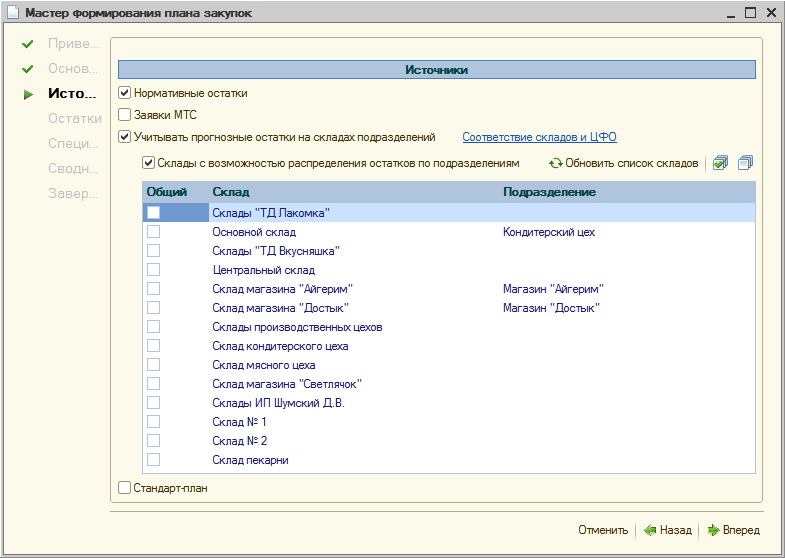

Составление плана закупок может производиться как вручную, так и автоматически.
Автоматическое формирование производится при помощи обработки "Формирование плана закупок".
Формирование плана закупок может производиться не только на основании заявок МТС и нормативных остатков, но и с учетом прогнозных остатков на складах подразделений и использованием стандарт-плана.
Перед использованием обработки "Формирование плана закупок" следует выполнить действия:
1. Если необходимо включать заявки МТС, то нужно организовать подачу заявок МТС единицами снабжения, на определенный период планирования требуемого сценария.
2. Если необходимо рассчитывать прогнозные остатки - заполнить соответствия складов и подразделений предприятия в регистре сведений "Соответствие складов и ЦФО".
3. Если необходимо учитывать нормативные остатки на складах - установить нормы запасов номенклатурных позиций в регистре сведений "Нормы запасов товаров по подразделениям".
4. Если необходимо получать номенклатурные позиции из заранее подготовленных планов закупа - подготовить стандарт-план.
На первом шаге мастера "Основное" в поле "Область планирования" необходимо указать область планирования - установить переключатель "По подразделению" или "По организации". Если указан вариант "По подразделению", то можно будет выбрать подразделение, по которому будет сформирован отдельный план закупок. При этом из заявок будут взяты только те, которые были поданы по этому подразделению. Если же указан вариант "По организации", то в формируемый план будут взяты все заявки структурной единицы (организации / ее структурного подразделения).
В поле "Параметры планирования" указывается сценарий и период планирования, по заявкам которого необходимо сформировать план закупок на тот же период.
После настройки шапки формируемого плана закупок, необходимо перейти на следующий шаг "Источники".

Здесь можно отметить один или несколько источников для формирования плана закупок:
нормативные остатки – нормы запасов на конец каждого периода на складах подразделений, необходимые, например, для бесперебойной работы (настраиваются в регистре "Нормы запасов товаров по подразделениям"). Увеличивают объем товаров к закупу на величину нормы;
заявки МТС – список заявок МТС на период планирования. Здесь отображаются все заявки МТС, удовлетворяющие настройкам первой страницы мастера (сценарий, период планирования, область планирования). Если какие-то заявки необходимо исключить из формируемого плана, то нужно убрать флажок напротив соответствующей заявки. Увеличивают объем товаров к закупу;
учитывать прогнозные остатки на складах подразделений – распределение прогнозных остатков при формировании плана закупок с целью уменьшения закупаемых номенклатурных позиций. Связь между подразделениями и складами предприятия устанавливается в регистре сведений "Соответствие складов и ЦФО". Уменьшает объем товаров к закупу;
склады с возможностью распределения остатков по подразделениям – общие склады, на которых числящиеся запасы могут быть потенциально использованы на нужды различных подразделений;
стандарт-план – любой документ "План закупок", выступающий в качестве шаблона, который может содержать разработанную на несколько периодов вперед программу снабжения подразделений предприятия.
Если формирование плана идет с использованием прогнозных остатков, тогда на следующем шаге "Остатки номенклатуры на складах" будет отображен список прогнозных остатков на начало периода. Остатки рассчитываются по следующей формуле:
Остаток (прогноз) = Остаток (БУ) + Закуп - Списание
Прогнозные остатки номенклатуры складываются из суммы остатков по бухгалтерскому учету и количества запланированного к закупу (колонка "Закуп") с вычетом количества по заявкам МТС (колонка "Списание"), запланированных на период с момента формирования по начало периода планирования нового плана закупок.
Шаг "Остатки номенклатуры на складах" носит информативный характер и предназначен для отображения текущих и прогнозных остатков.
На следующем шаге "Спецификация" отображается спецификация, сформированная из источников, указанных на шаге "Источники".
Для каждой строки можно изменять значения флажка "Включать" с целью указания того следует ли эту строку заявок включить в план закупок. Если в параметрах учета указан признак учета заявок-оснований для позиций плана закупок, тогда строки мастера будут сформированы в разрезе отдельных заявок, и в готовых заказах поставщикам будут указаны такие заявки.
При изменении признака "Включать" у строк будущего плана закупок, происходит пересчет поля "Сумма документа" с учетом включенных / не включенных позиций.
В графе "Примечание" отображаются пояснения к произведенным операциям в спецификации согласно настройкам источников. А именно:
на основании стандарт-плана - означает, что данная позиция добавлена на основании стандарт-плана;
на основании заявки - означает, что данная позиция добавлена на основании заявок МТС;
произведено нормирование запасов - означает, что данная позиция была дополнена требуемым нормативным запасом на складах, причем, если позиция отсутствовала в заявках МТС, либо в стандарт-плане, она будет добавлена в спецификацию;
произведена корректировка по прогнозным остаткам - означает, что данная позиция была уменьшена по данным прогнозных остатков на период планирования.
Значок предупреждения () означает, что закупаемое количество по данной позиции было уменьшено до 0 и следует обратить внимание.
На следующем шаге "Сводные данные" можно проанализировать получаемый план закупок, здесь приведена сводная информация по номенклатуре и по подразделениям:
1. На вложенной закладке "Свод по номенклатуре" будут подведены итоги суммы и количества по каждой номенклатурной позиции отдельно, с детализацией по периодам.
2. На вложенной закладке "Свод по подразделениям" можно будет получить итоговые суммы в разрезе подразделений, для определения суммы, выделяемой в плане на каждое подразделение.
По результатам анализа сводных данных можно откорректировать номенклатурный состав подготавливаемого плана закупок на закладке "Спецификация" и переформировать сводные данные для просмотра полученной картины.
Далее, на шаге "Завершение" отражается печатная форма создаваемого плана закупок.
Для того, чтобы завершить работу в обработке и открыть созданный документ "План закупок", необходимо нажать кнопку "Готово" на последнем шаге мастера.